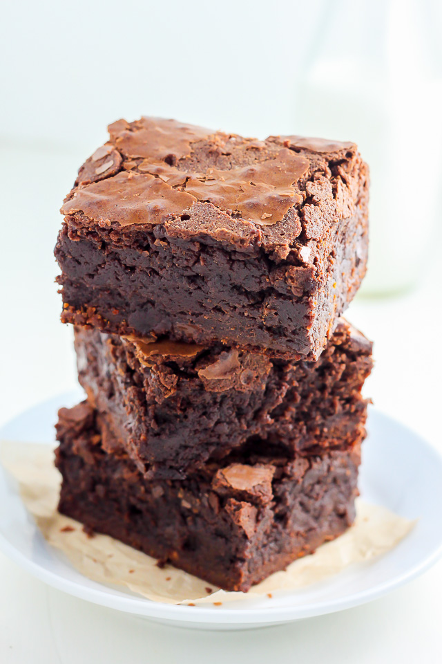

Brownies

Description
This is an amazing recipe for the best chocolate brownies
Ingredients
- 185g unsalted butter
- 185g dark chocolate
- 85g plain flour
- 40g cocoa powder
- 50g white chocolate
- 50g milk chocolate
- 3 large eggs
- 275g golden caster sugar
Steps
- Cut the butter into small cubes and put it into a bowl.
- Break the dark chocolate into small pieces and drop it to the same bowl as in the previous step.
- Fill a small saucepan with hot water and sit the bowl on top not touching the water. Put it on low heat until the butter and chocolate have melted. Stir it occasionally.
- Remove the bowl from the pan and let it cool down to room temperature
- In the meantime, turn the oven to 180 degrees Celsius
- Using a shallow 20cm square tin and line the base with kitchen foil or with baking parchment.
- Run the flour and cocoa powder into a sieve to get rid of any lumps into a medium bowl.
- Chop the white chocolate and milk chocolate into small chunks.
- Break three eggs into a large bowl and tip in the sugar.With a mixer, whisk the eggs and sugar. The result should be thick and creamy and about double its original volume.
- Pour the cooled chocolate mixture over the eggy mousse and fold it gently together.
- Resift the cocoa and flour mixture into the eggy-chocolate mixture and gently fold it together. Don't over do it.
- Put in the white and chocolate chunks and stir it together.
- Pour the mixture into the tin.
- Put the tin in the oven and beak it for about 25 minutes. The top should be shiny and have a papery crust. If it does not look this way, bake it for another five minutes. Take it out of the oven when it's done.
- Leave it to cool down and then cut it into quarters.